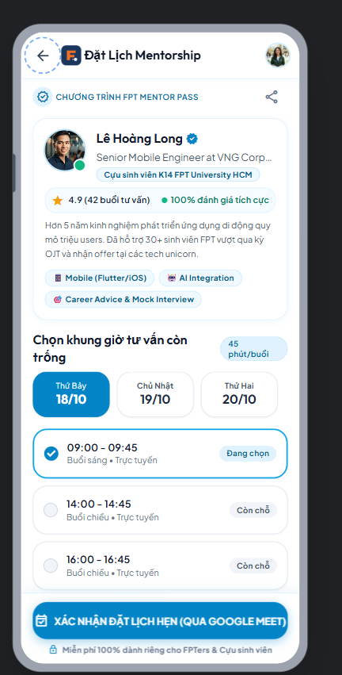

🎯 Bài Toán Thực Tế & 3 Trụ Cột Giải Pháp
- Đối tượng mục tiêu: Sinh viên Đại học FPT (đặc biệt SV năm 3 chuẩn bị thực tập doanh nghiệp OJT) & Mạng lưới Cựu sinh viên (Alumni Mentors tại FPT Software, VNG, Shopee, Google...).
- Không gian Kép (Dual-Space IA): Tách bạch mạch lạc giữa 🌐 Không gian chung toàn trường (học bổng, kỹ năng, sự kiện) và 💻 Không gian chuyên sâu theo ngành (SE, AI, IA, BA, GD).
- Cơ hội OJT & Bảo lãnh Referral: Cựu sinh viên đăng tin tuyển dụng nội bộ và trực tiếp duyệt CV bảo lãnh đàn em (tăng 80% cơ hội phỏng vấn).
- Tư vấn 1-1 Google Meet: Đặt lịch hẹn cố vấn review CV, định hướng Capstone trong dưới 30 giây kèm thẻ
Session Pass.
👥 Phân Công Nhóm 4 Thành Viên & Git Branches Độc Lập
| Thành viên | MSSV | Vai trò & Nhánh Git | Trách nhiệm Chính trong Bài Lab 2 |
|---|---|---|---|
| Võ Quang Tâm | SE192621 |
TV1 • branch: tv1 | UX Research, Persona, IA 8 màn hình, 3 User Flows & Figma Page 01 |
| Trương Chí Trung | SE193059 |
Leader/TV2 • tv2 | Google Stitch Prompting, 3 vòng lặp Before/After, Phản biện 10 Heuristics |
| Nguyễn Phương Khải | SE183590 |
TV3 • branch: tv3 | Design System Tokens, 9 Components (Page 04/05), Screen Spec & A11y |
| Đỗ Trọng Tín | SE190218 |
TV4 • branch: tv4 | Wireframe & Final UI (Page 02/03), Prototype (Page 06), Flutter Handoff |
🔗 Liên Kết Minh Chứng Công Khai (Public Access Verified)
🌐 GitHub Repo (Public):
github.com/chstrg2208/PRN-LAB-2-
github.com/chstrg2208/PRN-LAB-2-
🤖 Google Stitch Workspace:
stitch.withgoogle.com/projects/1771935993966075517
stitch.withgoogle.com/projects/1771935993966075517
🎨 Figma File (6 Pages Chuẩn): figma.com/design/PPdvsVA0O63HEHTQkxBQX0/PRM323---Lab-2---F-Alumni---Nhom-4
📱 Giao Diện Thực Tế F-Alumni (360 × 800 dp)

SCR_01: Login & Role

SCR_02: Home Feed

SCR_07: Mentor Booking
📝 Toàn Văn Prompt Khởi Tạo (Verbatim Prompt)
1. Persona: FPT Student
2. Task: 4 Core Screens
3. Platform: Mobile 360×800dp
4. Constraints: 48dp & WCAG 4.5:1
5. Style: #F27024 & #1B365D
Design a clean, modern mobile app interface for "F-Alumni: FPT Alumni Mentorship & Career Network" where university alumni share experience, job opportunities, and scholarships with current students.
Platform & Constraints:
• Mobile screen resolution: 360 x 800 dp
• Brand Colors: FPT Orange (
• Typography: Modern sans-serif, body text 14sp minimum, titles 18-24sp bold.
• Touch target: Minimum 48 x 48 dp for all buttons & interactive chips.
• High contrast: Text contrast > 4.5:1 (WCAG 2.1 AA compliant).
Generate the 4 core screens of the student journey:
1. Home Feed (SCR_02): Greeting, Search, Top Tab Switcher ("🌐 Không gian chung" & "💻 Nhóm ngành IT"), Category chips, Featured Alumni Card, 4-tab Bottom Nav.
2. Article Detail (SCR_03): Back/Share/Bookmark, Author Info Tile (VNG Senior Dev), checklist PDF card, Sticky Bottom CTA "Đặt lịch tư vấn 1-1 với Mentor".
3. Opportunity Board (SCR_04): Segmented filter (Tất cả, Thực tập OJT, Việc làm, Học bổng), Job Cards with badge "Cựu SV bảo lãnh Referral" & CTA "Xem & Xin Referral".
4. Mentor Booking (SCR_07): Mentor bio, time slots selector, topic input, primary CTA "XÁC NHẬN ĐẶT LỊCH HẸN (QUA GOOGLE MEET)".
Platform & Constraints:
• Mobile screen resolution: 360 x 800 dp
• Brand Colors: FPT Orange (
#F27024) for primary actions, Deep Navy Blue (#1B365D) for headers/credentials, Light background (#F8F9FA).• Typography: Modern sans-serif, body text 14sp minimum, titles 18-24sp bold.
• Touch target: Minimum 48 x 48 dp for all buttons & interactive chips.
• High contrast: Text contrast > 4.5:1 (WCAG 2.1 AA compliant).
Generate the 4 core screens of the student journey:
1. Home Feed (SCR_02): Greeting, Search, Top Tab Switcher ("🌐 Không gian chung" & "💻 Nhóm ngành IT"), Category chips, Featured Alumni Card, 4-tab Bottom Nav.
2. Article Detail (SCR_03): Back/Share/Bookmark, Author Info Tile (VNG Senior Dev), checklist PDF card, Sticky Bottom CTA "Đặt lịch tư vấn 1-1 với Mentor".
3. Opportunity Board (SCR_04): Segmented filter (Tất cả, Thực tập OJT, Việc làm, Học bổng), Job Cards with badge "Cựu SV bảo lãnh Referral" & CTA "Xem & Xin Referral".
4. Mentor Booking (SCR_07): Mentor bio, time slots selector, topic input, primary CTA "XÁC NHẬN ĐẶT LỊCH HẸN (QUA GOOGLE MEET)".
🌐 Link Google Stitch Public:
stitch.withgoogle.com/projects/1771935993966075517
📸 4 Màn Hình Đầu Ra Ban Đầu Từ Google Stitch (Initial Output V0)

SCR_02: v0_home.png

SCR_03: v0_detail.png

SCR_04: v0_jobs.png

SCR_07: v0_booking.png
⚠️ Nhận xét nhanh V0: Stitch lên bố cục và tông màu FPT tốt, nhưng thiếu hộp thoại xác nhận 2 bước khi đặt lịch, thiếu Empty State khi tìm việc không khớp và chưa có form tải CV PDF ➔ Cần 3 vòng lặp tinh chỉnh.
🔁 Vòng 1: Hộp Thoại Xác Nhận Đặt Lịch (
SCR_07)Heuristic #5: Error Prevention Chống chạm nhầm giờ hẹn Mentor khi thao tác 1 tay ➔ Thêm Modal Dialog 2 bước.

Before (Chốt thẳng)

After (Có Modal 2 bước)
🔁 Vòng 2: Trạng Thái Rỗng Khi Tìm Việc (
SCR_04)Heuristic #9: Error Recovery Tìm "DevOps Fresher" không có ➔ Thêm minh họa & nút "↻ Xóa bộ lọc".

Before (Chỉ có list)

After (Empty + Reset)
🔁 Vòng 3: Form Nộp CV & Lời Nhắn Bảo Lãnh (
SCR_05)Flow 2 Completeness Bổ sung thẻ bảo lãnh Alumni K12, đính kèm CV.pdf & ô nhập thư ngỏ 500 ký tự.

Before (Thiếu form)

After (Đủ CV & Note)
🔍 5 Phát Hiện Phản Biện UX Cụ Thể Trên Từng Màn Hình (Nielsen's 10 Heuristics & WCAG 2.1)
| # | Màn Hình Cụ Thể | Heuristic / Tiêu Chuẩn Vi Phạm | Vấn Đề UX Phát Hiện Thực Tế | Giải Pháp Khắc Phục Đưa Vào Thiết Kế |
|---|---|---|---|---|
| 01 | SCR_05 (Job Apply) |
#1 Visibility of System Status | Nút gửi CV không báo đang tải lên Cloud ➔ Dễ bấm đúp | Thêm variant Button / Loading (Spinner trắng) & khóa chạm tạm thời |
| 02 | SCR_07 (Booking) |
#3 User Control & Freedom | Bấm "Hủy lịch hẹn" xóa ngay lập tức không hỏi lại | Bắt buộc mở Confirmation Dialog 2 bước giải thích rõ việc nhường slot |
| 03 | SCR_01 (Login) |
#5 Error Prevention | Quên chọn chuyên ngành khi đăng nhập gây lộn xộn Feed | Tự động gợi ý chuyên ngành từ tiền tố MSSV trong email @fpt.edu.vn |
| 04 | SCR_02 (Home Feed) |
#7 Flexibility & Efficiency | Phải mở chi tiết bài viết mới bấm lưu Bookmark được | Đặt nút IconButton Bookmark (48×48dp) ngay góc trên thẻ PostCard |
| 05 | SCR_04 & SCR_06 |
WCAG 2.5.5 Target Size | Chip lọc ngành/công ty chỉ cao 32dp dễ chạm trượt 1 tay | Mở rộng vùng đệm cảm ứng toàn bộ Filter Chips đạt chuẩn ≥ 48 × 48 dp |
✅ ACCEPT 3 Đề Xuất AI Nhóm Chấp Nhận & Lý Do
- 1. Tab Switcher Kép trên
SCR_02(Heuristic #7 & Persona): Chuyển đổi tức thời giữa "🌐 Không gian chung" và "💻 Nhóm ngành SE" ➔ Giúp Trung lọc đúng bài phỏng vấn IT mà không mất kết nối toàn trường. - 2. Bảo lưu 100% Form & CV khi rớt mạng tại
SCR_05(Heuristic #9): Hiện Error Banner đỏ nhạt kèm nútRetry, giữ nguyên file PDF và thư ngỏ ➔ Khắc phục triệt để nỗi sợ mạng WiFi campus chập chờn giờ tan học. - 3. Nâng Touch Target lên ≥ 48×48dp & Quick Bookmark (WCAG 2.5.5): Giúp sinh viên lướt và lưu nhanh bài viết bằng 1 ngón tay cái khi đang đứng trên xe buýt.
🔄 MODIFY 2 Đề Xuất AI Nhóm Chỉnh Sửa Lại (Adapt to Context)
- 4. Gợi ý ngành thông minh tại
SCR_01(Heuristic #5 Error Prevention):
• Đề xuất của AI: Khóa cứng nút Đăng nhập nếu sinh viên chưa chọn chuyên ngành.
• Nhóm chỉnh sửa: Không khóa nút gây bối rối, mà tự động nhận diện tiền tố MSSV trong email (VD:trungtcse193059@fpt.edu.vn➔ tự chọn ngành SE), vẫn cho phép đổi lại linh hoạt. - 5. Thanh chọn ngày Horizontal Date Strip tại
SCR_07(WCAG Target Size):
• Đề xuất của AI: Hiển thị lịch 7 cột dày đặc trên màn hình 360dp (mỗi ô chỉ rộng 32dp).
• Nhóm chỉnh sửa: Chuyển thành dải Horizontal Date Carousel với ô chọn rộng rãi ≥ 48dp.
❌ REJECT AI Quyết Định Từ Chối Gợi Ý Của AI (Điểm Nhấn Phản Biện)
🤖 Đề xuất từ AI: "Thay thế tính năng đặt lịch hẹn Mentor bằng Chatbot AI tự động chấm điểm CV và trả lời câu hỏi nghề nghiệp 24/7 để giảm thời gian chờ."
⚖️ 3 Lý Do Nhóm Dứt Khoát TỪ CHỐI (Grounded in Persona & Heuristic #2):
- 1. Giá trị Kết nối Con người Thật (Human-to-Human Trust): Sinh viên năm 3 cần lời khuyên thực chiến từ đàn anh từng học đúng môn, đúng thầy tại ĐH FPT — sự thấu cảm mà AI chung chung không thể có.
- 2. Không có tư cách Bảo lãnh Nội bộ (Corporate Referral): Mục tiêu lớn nhất của Persona Trung là xin Referral nội bộ vào FPT Software, VNG, Shopee. Chatbot AI hoàn toàn không có thẩm quyền ký bảo lãnh nhân sự!
- 3. Bảo vệ bản sắc cộng đồng F-Alumni: Giữ nguyên luồng đặt lịch 1-1 qua Google Meet (
SCR_07) và duyệt CV trực tiếp bởi cựu sinh viên (SCR_05).
✔ Kết quả trong Figma Page 03 (`SCR_07`):
Giữ vững quy trình đặt lịch 1-1 trực tiếp với cựu sinh viên thật, tích hợp xuất vé
Giữ vững quy trình đặt lịch 1-1 trực tiếp với cựu sinh viên thật, tích hợp xuất vé
Session Pass có mã phòng họp Google Meet và đồng bộ Google Calendar.
📐 Low-Fi (Page 02) ➔ High-Fi (Page 03)
- Low-Fi Wireframe (Grayscale): Xác lập khung lưới
360 × 800 dp, lề chuẩn16dp, kiểm định thứ tự ưu tiên thông tin trước khi phối màu. - Visual Hierarchy (Phân cấp thị giác): Header Navy
#1B365Dtạo điểm tựa uy tín; nút CTA chính dùng FPT Orange#F27024nổi bật; huy hiệu Referral dùng Emerald#10B981. - Consistency (Tính nhất quán): Đồng bộ 100% Auto Layout, bán kính bo góc Card
12dp, chiều cao nút48dpvà thanh Bottom Nav 4 tabs xuyên suốt.
⚡ Đầy Đủ 4 Trạng Thái Giao Diện (UI States)
1. Loading State: Khung xương
Skeleton Shimmer (`#E5E7EB` → `#F3F4F6`) trên `SCR_02`, `SCR_04`, `SCR_06` + `Button Spinner` trên `SCR_05`.2. Empty State: Minh họa vector + tiêu đề hướng dẫn + nút "↻ Xóa bộ lọc" khi lọc việc làm/mentor không có kết quả.
3. Error State: Banner đỏ nhạt `#FDF3F2` tại `SCR_05b` thông báo mất mạng, cam kết giữ nguyên CV & thư ngỏ + nút Retry.
4. Populated & Modal Overlay: 8 màn hình đầy đủ dữ liệu thực tế + 2 hộp thoại xác nhận đè mờ nền 40%.
🎨 Toàn Bộ 8 Màn Hình Độc Lập Trên Figma Page 03 (High-Fidelity 360 × 800 dp)
SCR_01: Login & Role
SCR_02: Home Feed

SCR_03: Post Detail

SCR_04: Job Board

SCR_05: Referral Apply

SCR_06: Mentors Dir
SCR_07: Booking Pass

SCR_08: Profile & Net
♿ Bảng Kiểm Định Thực Tế Chuẩn W3C WCAG 2.1 Level AA / AAA
| Tiêu Chí Kỹ Thuật | Chuẩn Yêu Cầu | Kết Quả Đạt Được Trong F-Alumni | Đánh Giá |
|---|---|---|---|
| 1. Tương phản chữ thường (Normal Text Contrast) |
≥ 4.5 : 1 (WCAG 1.4.3 AA) |
• Chữ chính `#111827` / `#FFFFFF`: 13.5 : 1 • Chữ phụ `#595959` / `#FFFFFF`: 5.4 : 1 |
PASS (AAA/AA) |
| 2. Chữ lớn & UI Controls (Large Text & Buttons) |
≥ 3.0 : 1 (WCAG 1.4.11 AA) |
• Header Navy `#1B365D` / Trắng: 12.8 : 1 • CTA Orange `#F27024`: 3.2 : 1 (Bold 14sp+) |
PASS (AA) |
| 3. Vùng chạm cảm ứng (Touch Target Size) |
≥ 48 × 48 dp (WCAG 2.5.5) |
Mọi Button, IconButton (Back, Bookmark), Filter Chip & TimeSlot đều bọc frame ≥ 48 × 48 dp | PASS (100%) |
| 4. Cỡ chữ nội dung (Readable Body Font) |
≥ 14 sp (Mobile Spec) |
Nội dung bài viết 16 sp (body-lg), mô tả JD & form 14 sp (body-md). Không có body text < 14sp |
PASS (100%) |
| 5. Không chỉ dùng màu (Dual-Coding / Non-color) |
Icon + Nhãn chữ (WCAG 1.4.1) |
Mọi trạng thái đều kết hợp Màu + Icon + Text:● 📅 ĐÃ XÁC NHẬN • ⚡ Direct Referral • ⏳ ĐANG CHỜ |
PASS (100%) |
👁️ Hỗ trợ người khiếm thị màu (Color-blind Safe): Khi chuyển màn hình sang chế độ đơn sắc (Grayscale), sinh viên vẫn phân biệt chính xác 100% trạng thái đơn Referral và lịch hẹn nhờ hệ thống biểu tượng đi kèm.
📱 Kiểm Chứng Bố Cục Responsive (360dp → 412dp → ≥600dp)
- Chuẩn 360 × 800 dp (Samsung Galaxy A54): Thiết kế gốc với lề trái/phải cố định
16 dp(spacing-md), vùng nội dung rộng328 dp, không tràn chữ. - Mở rộng 412 × 915 dp (Galaxy S24 Ultra / Pixel 7 Pro): Toàn bộ Card và Form đặt thuộc tính
Horizontal Resizing: Fill Container➔ Tự động dãn rộng lên380 dpmượt mà, dải Filter Chips cuộn ngang không gãy dòng. - Màn hình rộng ≥ 600 dp (Tablet / Landscape): Danh sách chuyển từ
ListViewsangGridView 2 cột; thanhNavigationBarchuyển thànhNavigationRailbên trái.
360dp: Fill Container + 16dp Margin

Dual-Coding: Icon ⏳ + Nhãn Trạng Thái
🎬 Kịch Bản Live Demo Trực Tiếp (Figma Page 06)
▶ Flow 1 (Explore & Book Mentor):
Từ
Từ
SCR_02 (Chuyển tab Nhóm ngành IT) ➔ Chạm bài viết VNG mở SCR_03 ➔ Bấm nút Sticky CTA dưới đáy mở SCR_07 ➔ Chọn slot 09:00-09:45 ➔ Bật Confirmation Modal Overlay ➔ Chuyển cảnh nhận thẻ Session Pass (Google Meet).
▶ Flow 2 (OJT Job & Referral Apply):
Chuyển sang Tab 2
Chuyển sang Tab 2
SCR_04 ➔ Lọc Thực tập OJT ➔ Bấm "Xem & Xin Referral" mở SCR_05 ➔ Đính kèm CV.pdf & thư ngỏ ➔ Bấm Gửi (Loading → Result) ➔ Hiện Overlay Dialog Thành công ➔ Mở SCR_08 / SCR_09 xem trạng thái "⏳ Đang chờ cựu SV duyệt".
▶ Flow 3 (Error & Recovery Path):
• Lỗi mất mạng (
• Hủy lịch hẹn (
• Lỗi mất mạng (
SCR_05b): Hiện Banner đỏ giữ nguyên dữ liệu form + bấm Thử lại.• Hủy lịch hẹn (
SCR_08 → Dialog): Bấm "Hủy lịch" ➔ Bật Overlay Dialog 2 bước xác nhận nhường slot (Giữ lại lịch / Xác nhận hủy).
✅ Cam kết Kỹ thuật Prototype (10/10đ): Điều hướng
Navigate to, Open Overlay (Centered, 40% dark background), Back chuẩn ngữ cảnh, 0 Dead-ends (Không ngõ cụt).
📸 Minh Chứng Overlay Dialogs & Phục Hồi Lỗi Mạng Trong Prototype

Overlay: Referral Success

Overlay: Cancel Booking 2 Bước

SCR_05b: Network Error & Retry